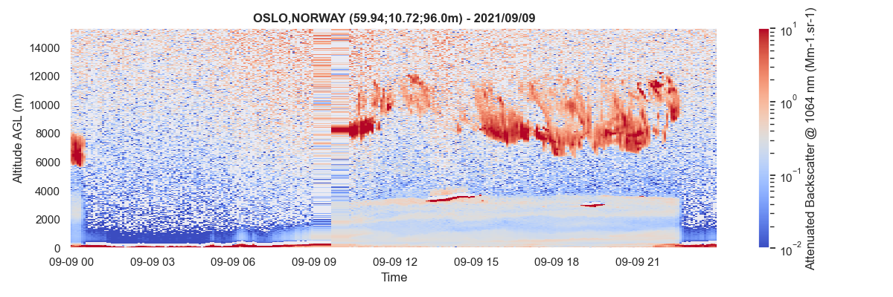

A-Profiles¶
Welcome to A-Profiles documentation!

A-Profiles is a python library dedicated to the analysis of atmospheric profilers measurements.
Using elastic measurements performed by Lidars and/or ceilometers, A-Profiles includes several modules such as clouds detection, tracking of the planetary boundary layer height or the retrieval of aerosol properties (extinction, mass concentration) using some a priori.
At present time, A-Profiles supports E-PROFILE data reading. This library is used by V-Profiles.